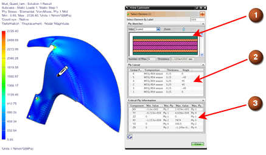

可使用查看层合板命令显示选定的面或单元的层合板物理属性。此命令允许您轻松查看选定单元的层合板定义和关键层片结果信息。
在 FEM 文件中，为选定的多边形面或单元面显示该信息。多边形面中的所有单元必须位于同一个区域内。在仿真文件中，为选定单元显示该信息。在仿真文件中必须显示层片结果。
该信息在命令对话框中显示，包含以下内容：
层合板草图以及层片数和总厚度 (1)。
层片铺层信息，具体包括全局层片 ID、层片的材料组合、厚度和角度 (2)。
选定结果的最小值和最大值以及出现极值处的层片 ID (3)。(仅限仿真文件)

可以在后处理导航器中双击层合板结果类型中的一种以便在仿真文件中显示层片结果：
在 FEM 文件中查看层合板
应用模块 |
高级仿真 |
先决条件 |
必须在 FEM 文件中计算区域 |
仿真导航器 |
右键单击区域节点→查看层合板 |
在仿真文件中查看层合板
应用模块 |
高级仿真 |
先决条件 |
结果必须显示在“后处理”中 |
工具条 |
层合板→查看层合板 |